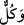
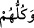
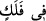
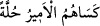
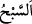

“Güneşle ay biraraya getirildiği zaman!” (el-Kıyame, 75/9) Bu ise kıyâmet
alâmetlerindendir.
Eğer “ne de gece gündüzü geçebilir” sözü, âyetin başındaki “Ne güneş aya
yetişebilir” sözünün tersiyse, burada ‘gece gündüze yetişemez’ denilmesi daha münasip
olurdu.” denirse, şöyle cevap veririm: “Yetişmek” yerine “geçmek” kelimesinin
getirilmesi, ayın hızlı seyrine uygun olan o olduğu içindir.
Burada işâret vardır ki ay güneş, güneş de ay olamayacağı gibi aynı şekilde kalb ayı
da Hakk’ı müşâhede güneşine teveccühü sâyesinde bu güneşin nûruyla nurlanır. Nitekim
Allah Teâlâ şöyle buyurur: “Yeryüzü, Rabbinin nûru ile aydınlanır.” (ez-Zümer,
39/69) Fakat Rab Teâlâ kul olmaz, kul da rab olmaz. Çünkü rubûbiyyet (Rab olmak)
rabbe, ubûdiyyet (kulluk) da kula âiddir. Hulûl ashâbının ve boş söz söyleyenlerin
dediği şeylerden Allah Teâlâ yücedir.
Onların “Her biri” yedi felekten belli “bir yörüngede yüzerler.”
“__WORD__, “__WORD__ demektir. Tenvin güneş ve aya râci olan zamir yerine gelmiştir. Çoğul
olarak gelmesi ise ay ve güneşin doğuş yerlerinin çokluğuyla onlara ârız olan çokluk
îtibâriyledir. Çünkü hallerin değişmesi zatta da bir çeşit çoğalmayı gerektirir. Ya da
zamirin çoğul getirilmesi yıldızlara göredir. Çünkü güneş ve ayın zikredilmesi yıldızları
da hissettirmektedir.
Bahrû’l-ulûm’da der ki: “__WORD__ bir felek cinsinde demektir. Bu söz Arapların “__WORD__ (Emir onlara bir hulle giydirdi)” sözü gibidir. Onlar bu sözleriyle onlara
bu cins hulleyi giydirdiğini kasdetmektedirler. Felek, yıldızların aktıkları ve seyr
ettikleri yerdir. Böyle isimlendirilmesi büyük gemiye benzediği içindir. Nitekim el-
Müfredât’ta böyle geçmektedir.
“__WORD__ suda veya havada hızlıca gelip geçmektir. Mecaz olarak yıldızların
felekte/yörüngede yürümesi için kullanılmıştır. el-Müfredât’ta böyle denilmektedir.
Keşfü’l-esrâr’da ise şöyle der: “__WORD__ suda yüzmek gibi seyirde rahatlıktır. Bir şeyde
rahat olan onda yüzmüş demektir.
Mânâ şöyledir: Suyun üstünde yüzen kimsenin seyri gibi onlar rahatlık ve kolaylıkla
hiçbir rakipleri olmadan seyr ederler.
Süyûtî el-Hey’etü’s-seniyye isimli kitabında der ki: “Allah göğün altında ok hızıyla
akan, bir damlası bile yere düşmeden Allah Teâlâ’nın emriyle havada duran bir deniz
yaratmıştır. Güneş, ay ve yıldızlar onda akıp gider. İşte “Her biri bir yörüngede
yüzerler” kavli bunu ifade etmektedir. Felek, bu denizin derin dalgalarında tekerleğin/
çarhın döndüğü gibi döner. Allah Teâlâ güneşin tutulmasını isteyince güneşi bu
tekerlekten/çarhtan meylettirir. Güneş bu denizin derinliklerine düşer. Güneşin kalan
yarısı veya üçte biri Rab Teâlâ’nın rabbânî hikmet sebebiyle ve kevnî istîdad gereği
dilediği kadarı tekerleğin üzerinde kalır.
Müneccimler Allah Teâlâ’nın “yüzerler” kavli ile güneş, ay, yıldız ve gezegenlerin